01
Move across screens
One mouse. A little more freedom.
Control up to three Android phones with the mouse and keyboard already on your desk.
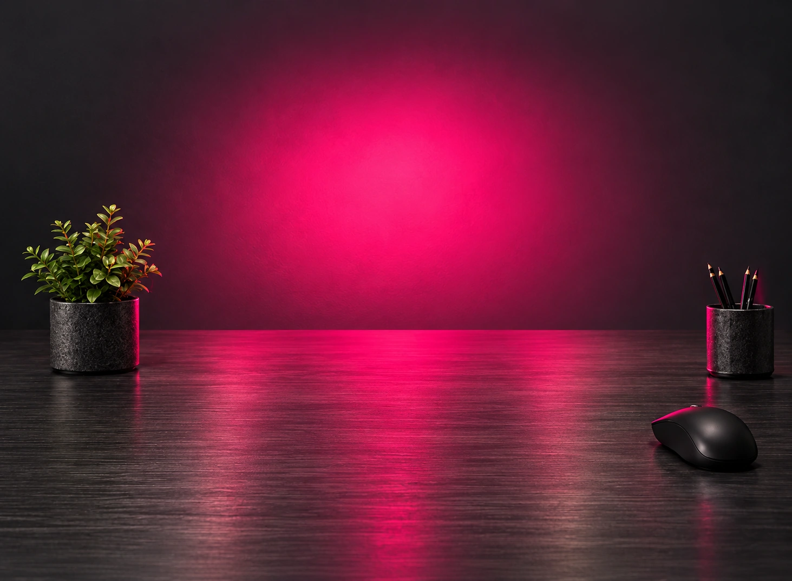
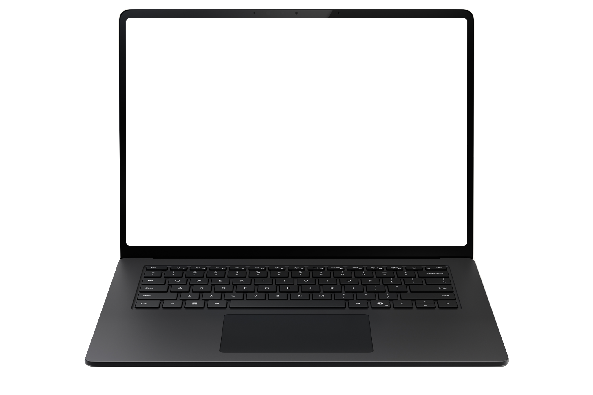
Everything you need. Right where you need it.
| A | B | C | |
|---|---|---|---|
| 1 | Project | Status | Owner |
| 2 | Website | Ready | Alex |
| 3 | Mobile app | Ready | Jamie |
| 4 | Launch plan | In progress | You |
| 5 | |||
| 6 |
No conversations found.
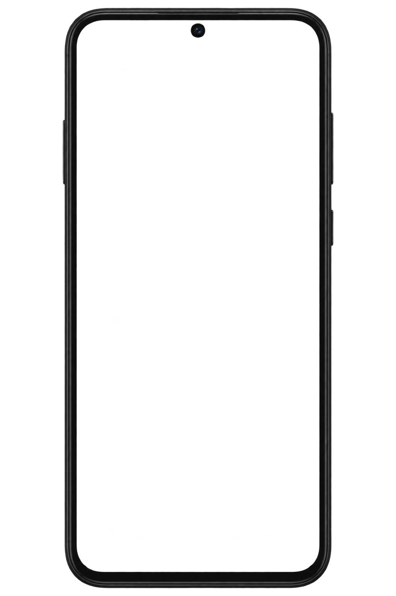
Loading video…
Click any screen or Try mouse control to begin. Press Esc to leave.
Esc to leave mouse controlYOUR WORKSPACE, LIVE
Six little ways to make your desk feel more connected.
One mouse. A little more freedom.

Your keyboard follows you.

Continue right where you left off.

From your desktop to your phone.

Your phone's sound. Your PC's speakers.

A workspace that feels like you.
Interactive demo · Sample data
FROM DEMO TO YOUR DESK
One Windows app. Up to three phones. Choose the setup that fits your desk.
KEEP YOUR DAY CONNECTED.
Your Android apps, with the mouse and keyboard already on your desk.
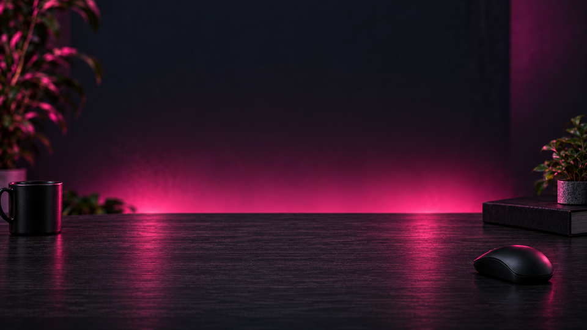
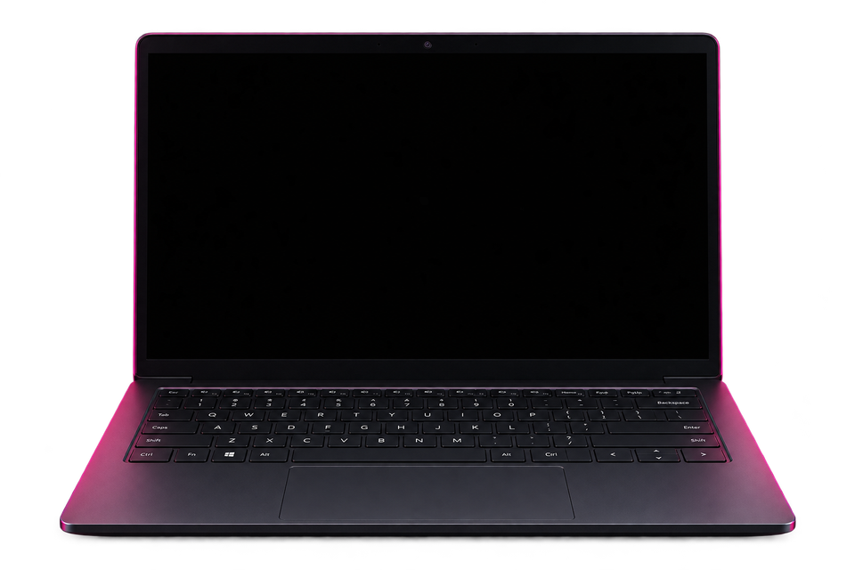
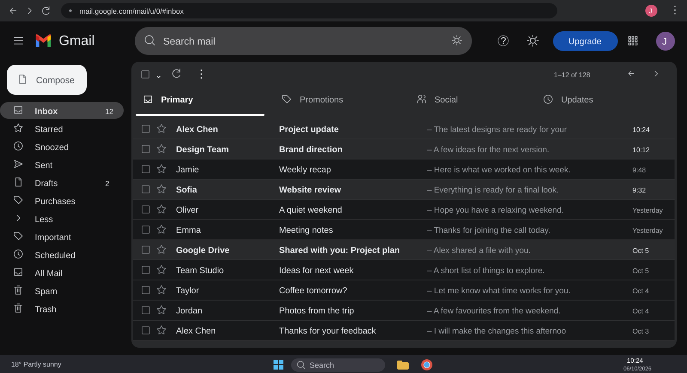
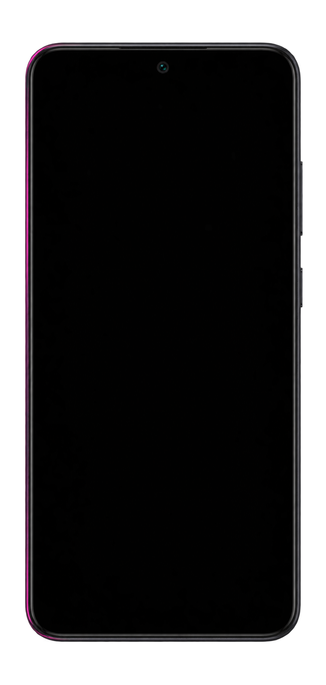
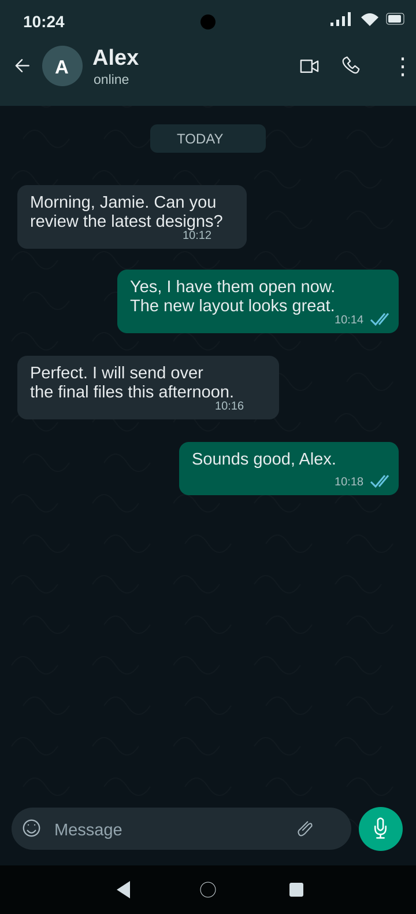
Reply in your phone’s own apps.
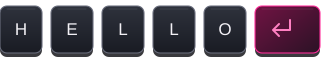
Cross your chosen screen edge to control your phone.
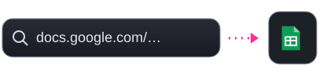
Continue in its matching installed app.
Other links open in your browser.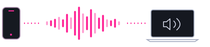
Bring supported phone media audio to your computer.
Android 10+ · Permission required.Click, scroll and type in your own Android apps.
Explore the demoCONNECTED, YOUR WAY
After your first setup, PhoneBridger chooses the connection for you.
See the one-time USB setup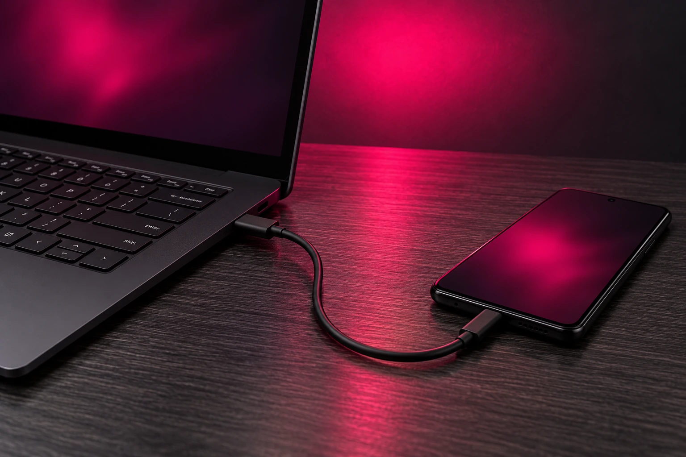
ONE SMALL SETUP
Install both apps, approve your PC and choose where your phone belongs.
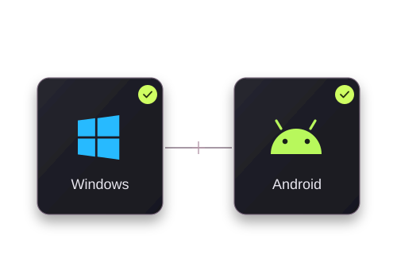
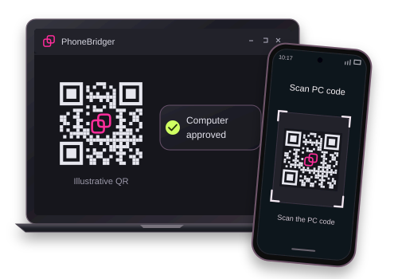
Use the same Wi-Fi for first pairing. Scan the PC’s code and approve your computer.
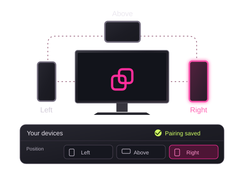
Enable mouse control on Android, then match your phone’s position and screen edge.
The current beta supports one physical USB phone at a time. Other paired phones can use Wi-Fi.
During a connection switch, control returns to Windows; cross your configured screen edge to enter the phone again.
EVERYDAY DESKS. DIFFERENT STORIES.
A place for experiences with PhoneBridger.
Sample reviews for the design preview.
Mostly using it for WhatsApp while I work. Being able to type a proper reply on my keyboard is the bit I like most.
I only have one phone, so I went with the app on its own. My old desk stand does the job.
Took a little while to get the Android permissions sorted. After that, moving the mouse over to the phone made sense pretty quickly.
The phone sits on my right anyway. Nice to have the mouse follow the same layout.
I still pick my phone up for calls. For messages at my desk, though, I usually just use the keyboard now.
Work phone on one side, personal phone on the other. That's the setup I wanted.
Not having to scan the QR code again every morning is useful. I'd assumed pairing would be a daily thing.
The USB setup wasn't just plug and play the first time. I had to enable debugging and approve the PC. Worth reading those steps before you start.
Long emails on a phone keyboard were never my favourite. This makes that part less annoying.
I tried the demo first because I couldn't quite picture the screen edge thing. It was easier to understand once I'd moved the cursor across.
I like that I'm still using the apps on my own phone. I didn't want another messaging app to set up on Windows.
Changed the phone from the right side to the left when I rearranged my desk. Being able to change that in the app is handy.
Nothing complicated about how I use it. Read a message, move over, reply, back to work.
Sending a Sheets link to the phone is useful for me. Just remember you need the matching app installed if you want it to open there.
Didn't think I'd use the keyboard part much. Turns out that's what I use most.
I wanted two phones connected, not a whole new desktop setup. Keeping my usual mouse and keyboard was the point for me.
Wi-Fi is enough for how I use it. Good to have the cable option, but I don't need another cable on the desk all day.
The black holder was the easy choice for my desk. I prefer the phone beside the screen rather than lying flat under it.
It took me a few tries to settle on which screen edge to use. Left works better for me than above.
I don't use every feature. Mouse control and typing on the phone are enough for me at the moment.
I had to look up how to install the Android APK. A bit more setup than a Play Store download, so the instructions help.
The phone is still a small screen, obviously. For a quick reply or checking something in an app, I find this useful.
I usually leave the phone plugged in at my desk. After setting USB up once, I don't have to keep choosing the connection myself.
Started with the app before deciding whether I wanted a holder. I like being able to do it in that order.
01 / 24
Drag to exploreFind the setup that fits your desk.
Explore the setups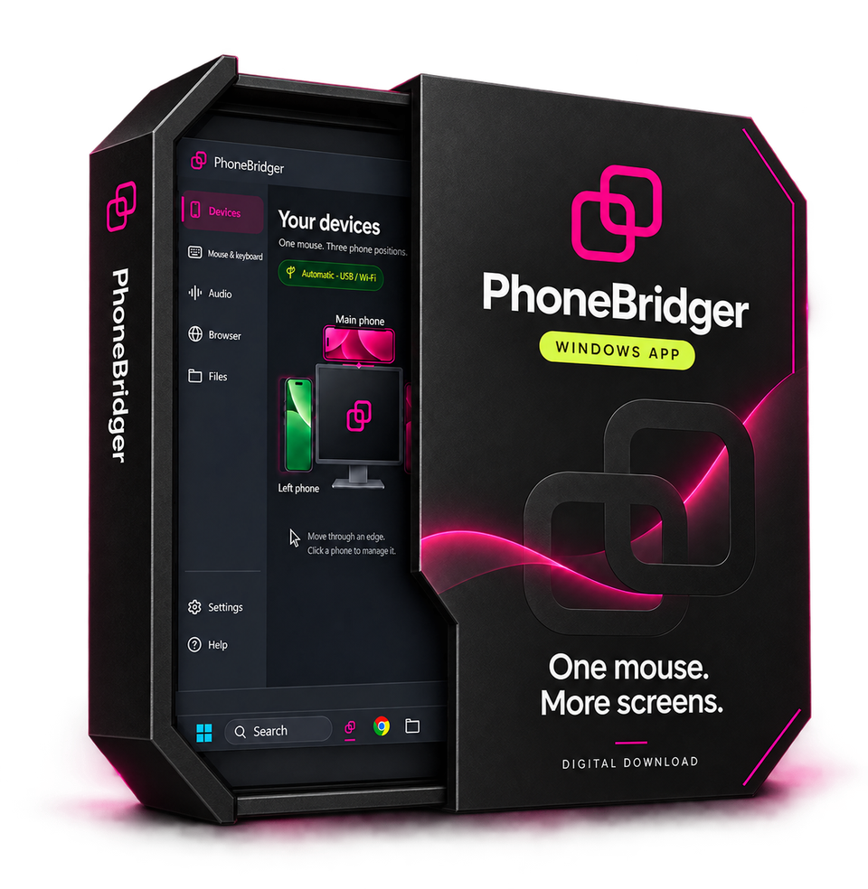

YOUR DESK. YOUR SETUP.
Choose PhoneBridger on its own, or complete your setup with one, two or three magnetic holders.
Choose my setupAlready have PhoneBridger? Downloads & setup
YOUR NEXT WORKSPACE
Start with the Windows app and Android companion.
Mouse, keyboard and your connected phones in one workspace.
Extract the entire ZIP. Keep PhoneBridger.exe beside its _internal folder.
Pair with your PC and keep using the Android apps you know.
Install on your phone, then follow the pairing steps. Updating keeps your saved pairing.
This is a preview release. The Windows beta is unsigned and may be blocked by Windows application control. Android is distributed as an APK. Read the beta notes or ask us for help.
GOOD TO KNOW
A few things before you make it yours.
Windows + Android
Yes. Choose App only and use your existing phone setup. Magnetic holders are optional.
Explore the setupsPhoneBridger connects a Windows PC to Android phones. The current Windows package is 64-bit; the companion requires Android 8 or newer. Phone audio sharing requires Android 10 or newer. This beta has no macOS or iPhone companion.
Use up to three paired phones around your PC: left, right or above. The current USB discovery supports one physical USB phone at a time; additional phones can connect over Wi-Fi.
No. Pair once by scanning the PC’s QR and approving your computer on Android. Ordinary disconnection or a switch between USB and Wi-Fi keeps your pairing. Forget computer removes the app’s saved trust and requires pairing again.
Yes, after the one-time setup. Pair over reachable Wi-Fi first, enable USB debugging on Android and authorize your PC. A data-capable cable then takes priority automatically. Unplugging restores Wi-Fi when your saved phone is reachable.
Android accessibility access lets the companion perform mouse and keyboard actions. Audio sharing has a separate Android system approval. The app guides you through the permissions needed for the features you turn on.
The website uses local sample apps and data. It does not connect to your Google account, send real messages or pair a phone. The video player uses local preview files with YouTube-style controls. Play, pause, drag the timeline, or switch clips with Previous / Next, including during mouse control. Press Esc to leave the simulation.
A little more detail
Supported Google service links try the matching installed app, such as Sheets, Gmail or Drive. If it is unavailable, the link opens in the phone’s browser. Chrome tab handoff uses the browser extension included in the Windows package.
The current release includes mouse and keyboard control, supported phone audio, Google link handoff and automatic USB / Wi-Fi selection. File dragging is planned and is not included. Windows production signing and Google Play distribution are still pending.
For Chrome tab handoff, follow the extension setup included in the Windows ZIP. Audio availability depends on the phone app’s capture support.